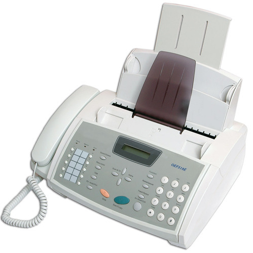

Easy faxing anywhere!!!
|
|
Easy faxing anywhere!!! |
A fax machine is designed to both send and receive documents so it has a sending part and a receiving part. The sending part is a bit like a computer scanner, with a CCD (charged-coupled device) that scans only one line of a document at a time, and only in black and white. Crudely simplified, it looks at each line separately, detects the black areas and the white areas, and transmits one kind of electric pulse down the phone line to represent black and another to represent white (just like saying "black" and "white", in fact). The phone line transmits this information almost instantly to a fax machine at the other end. It receives the electrical pulses and uses them to control a printer. If the receiving fax hears "black", it draws a tiny black dot on the page; if it hears white, it moves along slightly, leaving a white space instead. It takes about a minute or so to transmit a single page of writing (or a complex drawing) in this clumsy but very systematic way.
|
1. To send a fax, you feed the page into the input slot and it's pulled in between several pairs of rollers. Larger fax machines have built-in document feeders that automatically feed in multiple pages from a stack, so you don't have to stand at the machine feeding in pages one at a time. 2. As the paper moves down, a bright light shines onto it. White areas of the page reflect a lot of light; black areas reflect little or none. 3. The light reflects off the page into a light-detecting CCD (charged-coupled device). 4. The CCD turns the analog pattern of black and white areas on the page into a numeric (digital) pattern of binary zeros and ones and passes the information to an electronic circuit. 5. The circuit sends the digital information down the telephone line to the fax machine at the receiving end. |
|
|
6. When you receive a fax, the same circuit takes incoming digital information from the phone line and routes it to a built-in printer. 7. In a typical personal fax machine, paper is pulled from a large roll inside the machine. (In a larger office fax machine, it usually comes from a plain-paper hopper, similar to the one in a laser printer.) 8. The thermal (heat-based) printer, operated by the circuit, reproduces the incoming fax on the paper as it moves past. 9. An automatic blade cuts the page and the printed fax emerges from the output slot. |  |